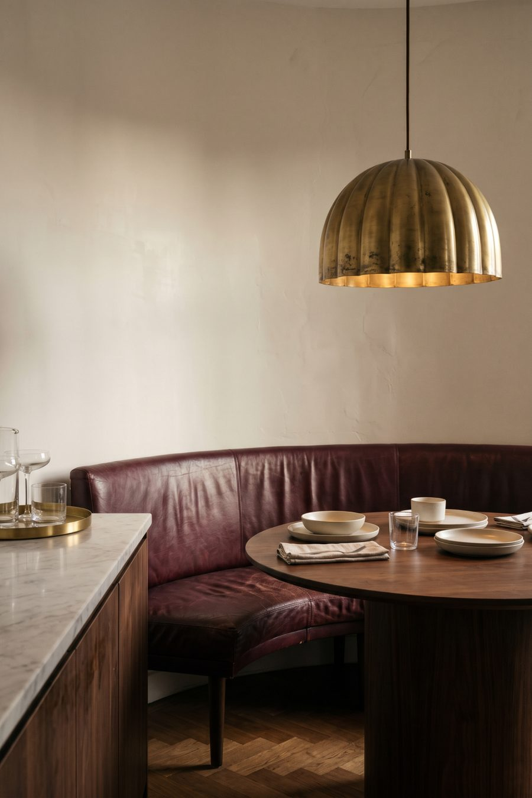

KI-generiertes Stimmungsbild – die Produkte sind passende Alternativen.
← Wohnzimmer mit Charakter Bottega Ferrarese·7 Produkte im Look
Shop the Look
Bottega Ferrarese·7 Produkte im Look
Shop the Look
Wohnzimmer · Look zum Nachshoppen
Neo Deco am Esstisch: Messing, Leder und Walnuss
Der Neo-Deco-Trend für die Essecke: Hängelampe aus Messing über rundem Holztisch, geschwungene Lederbank und Sideboard mit Bartablett.
Die Produkte zum Look
Mit * markierte Links sind Affiliate-Links zu Amazon.
- Bei Amazon ansehen* ↗Hängelampe Messing KuppelTomshine Goldene Hängelampenschirme, 2er-Set, Halbkreis, Ø 30 cm
Alternative: Lampenschirm E27, Metall Schwarz-Gold, Ø 30 cm* - Bei Amazon ansehen* ↗Runder Esstisch dunkles Holz/WalnussTribesigns Runder Esstisch, 120 cm, mit Holzsockel
Alternative: LITTLE TREE Runder Esstisch, 120 cm, mit Holzsockel* - Bei Amazon ansehen* ↗Polsterbank burgunder LederECHTWERK Sitzbank Scarlett, Samtbezug, mit Stauraum, Metallbeine
- Bei Amazon ansehen* ↗Sideboard dunkel / Marmor-OptikMB Muebles Bonitos Sideboard, 140x80x40 cm, glänzend schwarz
Alternative: Merax TV-Lowboard 200 cm, Schwarz mit Marmor-Optik* - Bei Amazon ansehen* ↗Bartablett MessingGoldenes rundes Tablett aus Metall, mit 3 Anti-Rutsch-Füßen
Alternative: DOKOT Rundes Tablett aus Edelstahl, goldfarben* - Bei Amazon ansehen* ↗Gerillte Gläser SetINSETLAN Geriffelte Trinkgläser 8er-Set (4 Highball + 4 Rocks)
Alternative: KONZEPT Gläser-Set 6-teilig, geriffelt, 480 ml* - Bei Amazon ansehen* ↗GlaskaraffeMAMEIDO Wasserkaraffe 1 l mit Ausgießer und Sieb, Smoke Gold
Alternative: KONZEPT Wasserkaraffe 1 l, geriffeltes Glas*